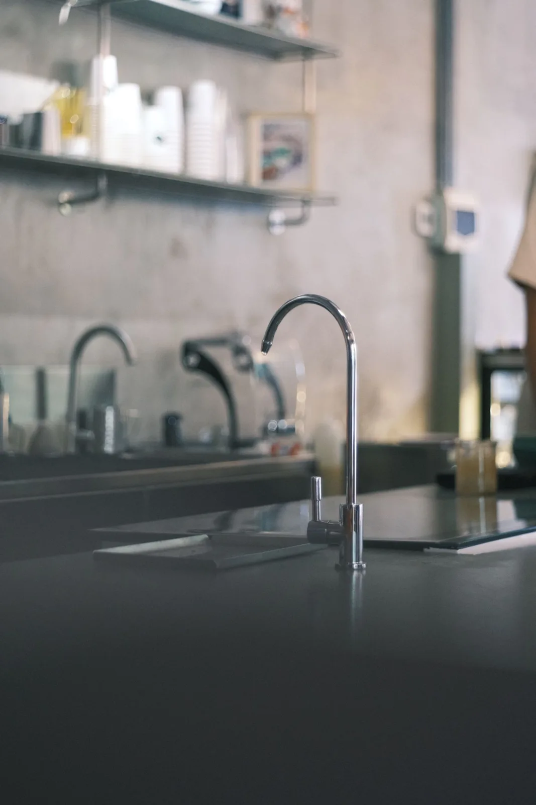
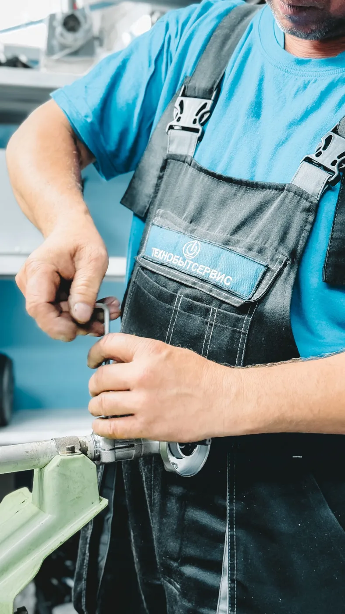
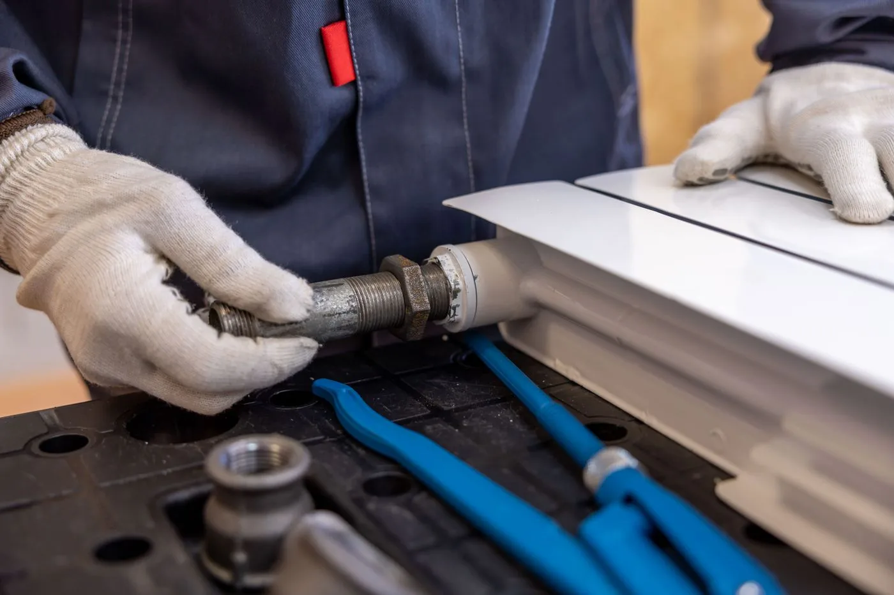
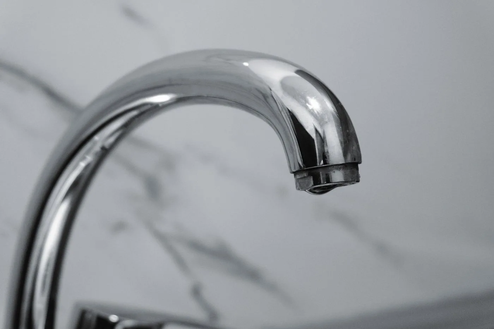
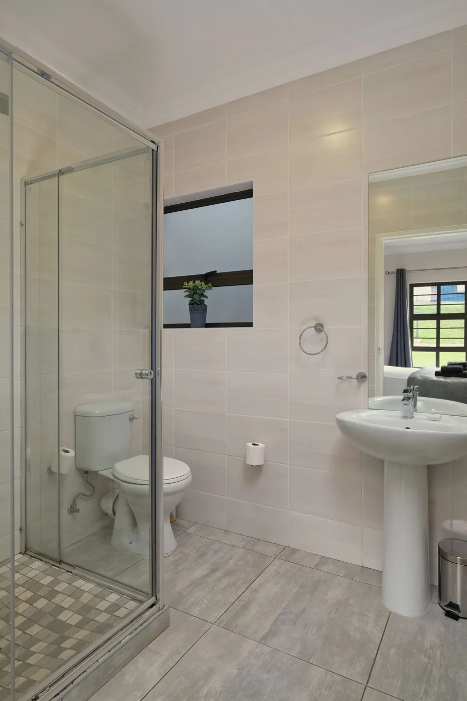
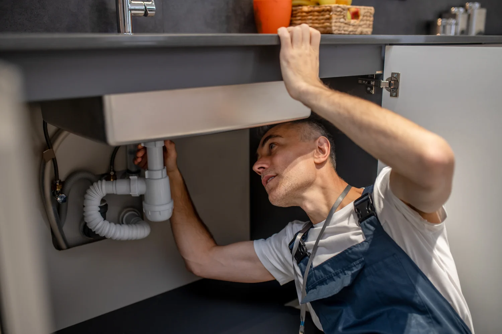
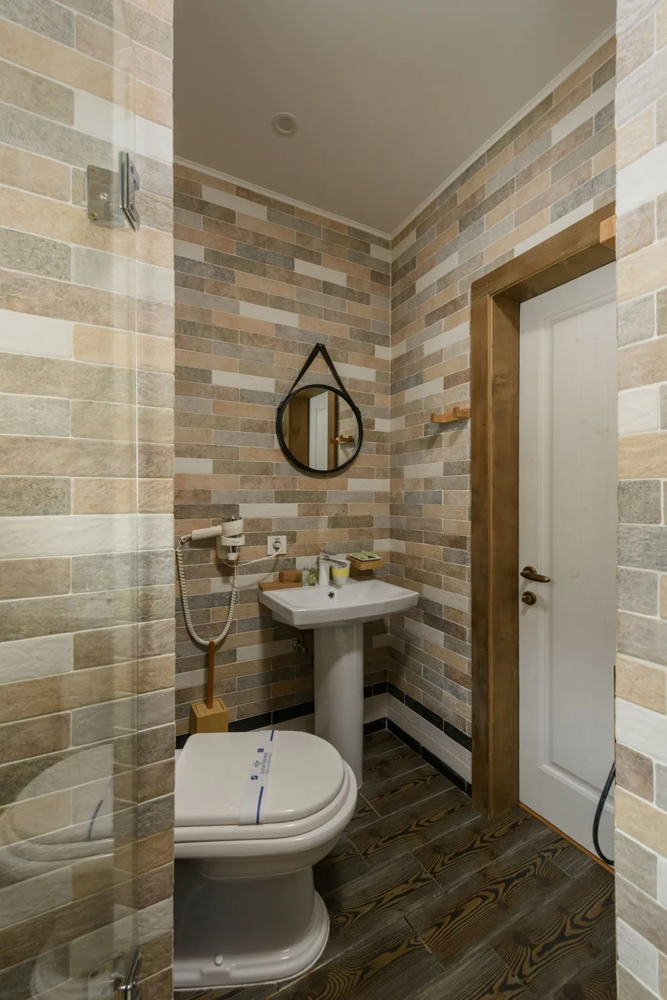
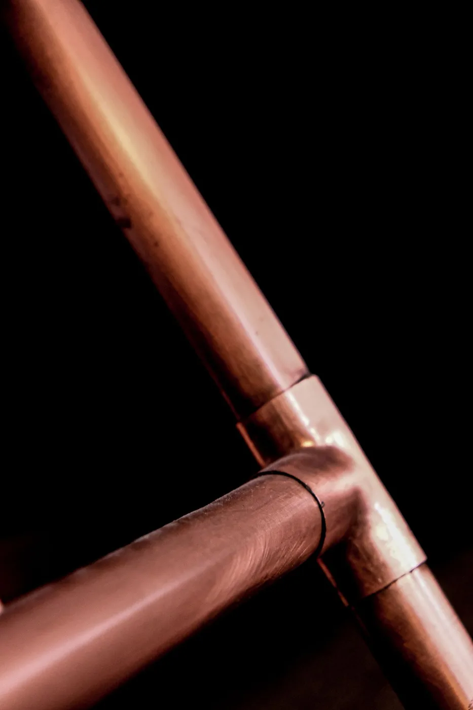
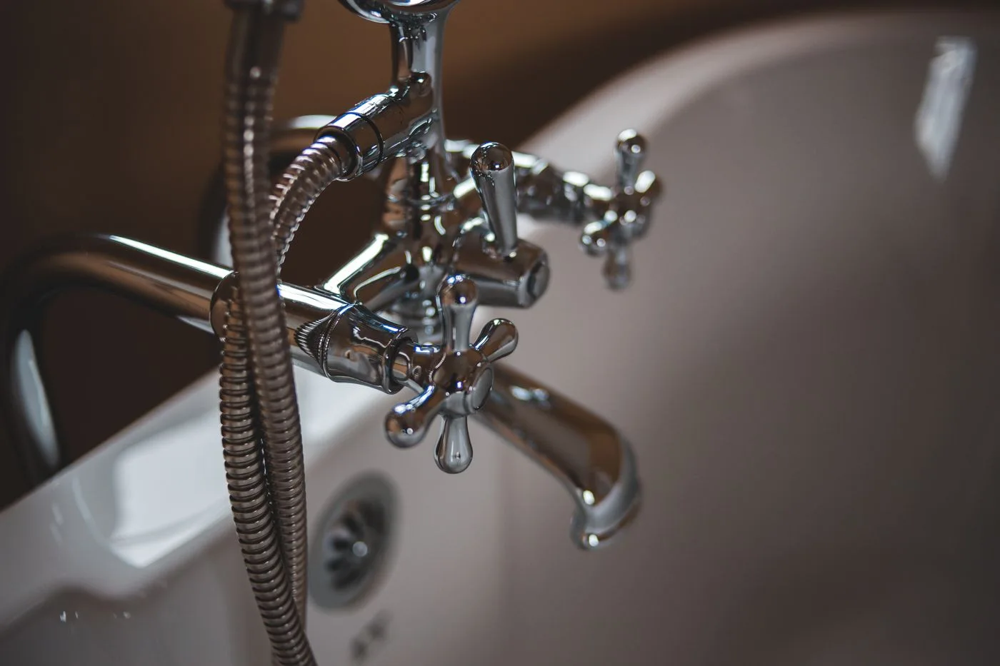
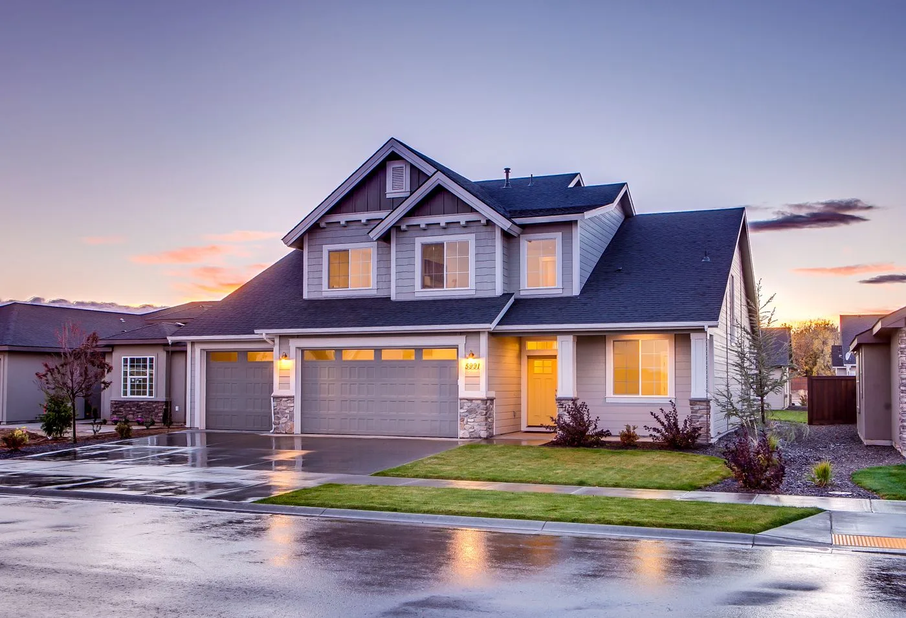

Tell us what’s happening
Share your location, the issue and a few photos through WhatsApp.

YOUR PROPERTY. OUR PRIORITY.
Reliable plumbing repairs, installations and maintenance for homes and businesses.
Find the help you need. Explore below.

PLUMBING SERVICES / 01
Small leaks deserve a careful look. We inspect visible connections, identify the affected parts and discuss a practical repair before work begins.

PLUMBING SERVICES / 02
Restore the connections your property depends on. We assess accessible damaged pipework and select a repair approach suited to the material and condition.

PLUMBING SERVICES / 03
From a persistent drip to a replacement sink, get help with the fixtures you use every day and the supply and drain connections behind them.

PLUMBING SERVICES / 04
A toilet should fill, flush and seal correctly. We troubleshoot running or leaking toilets, replace worn components and plan complete replacements when needed.
PLUMBING SERVICES / 05
Slow drainage can interrupt your whole routine. Tell us which fixtures are affected so we can assess the blockage and discuss the right next step.

PLUMBING SERVICES / 06
Keep the heart of your home working smoothly. We handle sink and faucet repairs, accessible water lines and the drain connections inside your kitchen cabinets.

PLUMBING SERVICES / 07
Practical repairs and considered fixture updates for a room that works hard every day. We review the existing connections before planning the work.

PLUMBING SERVICES / 08
Water delivery starts with sound connections. We inspect accessible supply lines, valves and fittings, and repair or replace affected sections as appropriate.

PLUMBING SERVICES / 09
Make an update feel complete. We review fixture compatibility, existing connections and the installation requirements before fitting your new equipment.

PLUMBING SERVICES / 10
For the place you call home and the properties you care for. Share the issue, location and access details so we can coordinate a sensible service plan.
PLUMBING SERVICES / 11
Plumbing support for the spaces where business happens. We coordinate access and discuss the scope with owners and property managers before scheduling work.
SIMPLE FROM THE START
Share your location, the issue and a few photos through WhatsApp.
We discuss the visible issue, scope and estimate before scheduling.
Agree on access and timing, with communication in your preferred language.